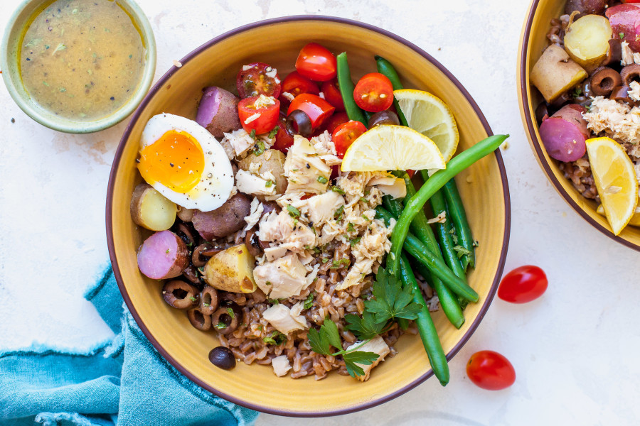
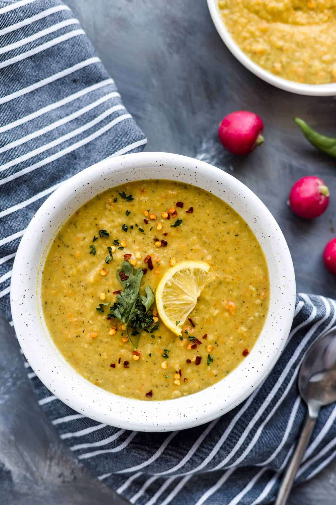
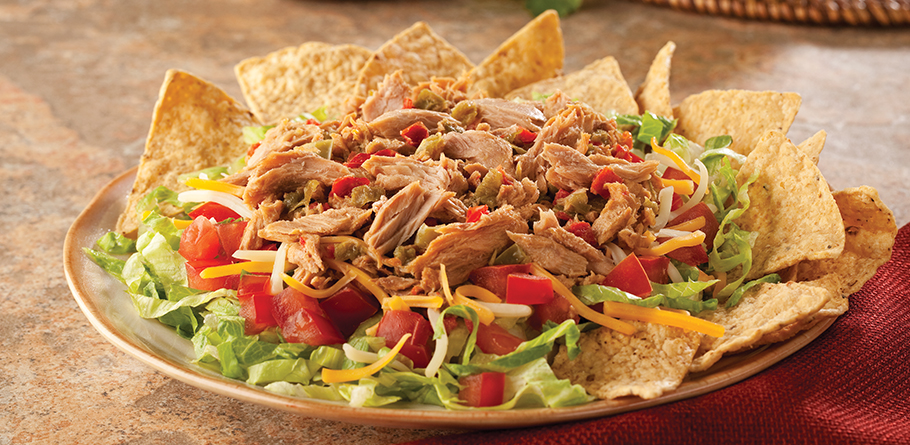
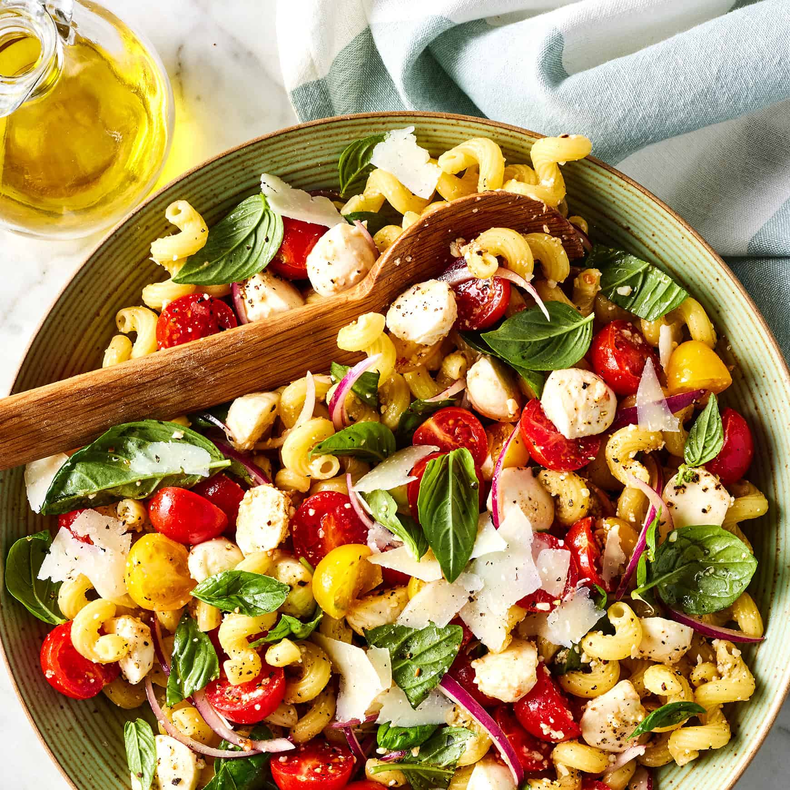

Buffalo Chicken Pizza
A fusion of savory and spicy that combines the flavor of classic Buffalo chicken wings with pizza
0 min
Buffalo Chicken Pizza
A fusion of savory and spicy that combines the flavor of classic Buffalo chicken wings with pizza
Ingredients
- 1 pound pizza dough
- 8 tablespoon unsalted butter
- 1/2 cup hot sauce
- 1/2 cup shredded rotisserie chicken
- 1/2 cup shredded mozzarella
- 2 tablespoons crumbled blue cheese
- 1 scallion
Process (Step-by-step)
- Set a pizza stone on an oven rack and preheat the oven to 425 degrees F 5 min
- Roll out and stretch the dough on parchment paper or a pizza peel to a 12-inch circle; set aside. 2 min
- Melt the butter in a medium saucepan over medium-low heat and whisk in the hot sauce 2 min
- Pour half the mixture into a medium bowl, add the chicken and stir to coat fully 2 min
- Ladle a few tablespoons of the remaining hot sauce mixture on the dough and spread in a thin even layer. 2 min
- Scatter with the chicken and mozzarella. Sprinkle the blue cheese on top. 2 min
- Transfer the pizza to the preheated pizza stone and cook until crisp 15 min

Caprese Sandwich
Submarine sandwich featuring mozzarella, ripe tomatoes, and sweet basil
0 min
Caprese Sandwich
Submarine sandwich featuring mozzarella, ripe tomatoes, and sweet basil
Ingredients
- 12 ounces fresh mozzarella cheese
- 2 ripe tomatoes
- 8 slices sourdough bread
- 1 clove garlic
- 1 tablespoon extra-virgin olive oil
- A handful of fresh basil leaves
- 1/4 pound thinly sliced deli ham
- 1/4 pound thinly sliced salami
- Salt & pepper
Process (Step-by-step)
- Heat a stovetop grill pan or a broiler to high heat. 5 min
- Slice the cheese about 1/4 inch thick and season with salt and pepper. 2 min
- Slice the tomatoes, slice crosswise the same thickness as the cheese and season with salt and pepper. 2 min
- Grill or broil the slices of bread, turning as needed, until evenly toasted 2 min
- Lightly smash the garlic. Rub 1 side of each slice of bread with the garlic and drizzle with the olive oil. 2 min
- Roughly tear the basil leaves. Layer the mozzarella, basil, tomatoes, ham and salami on 4 slices of bread and top with the remaining bread. 2 min

Chicken Soup
A satisfying medley of tender chicken and vegetables
0 min
Chicken Soup
A satisfying medley of tender chicken and vegetables
Ingredients
- Chicken carcass and bones
- 4 cups low-sodium chicken broth
- 2 medium carrots, sliced into 1/4-inch-thick rounds
- 2 celery stalks, cut into 1/4-inch-thick slices
- 1 medium onion, chopped
- 1/2 cup loosely packed cilantro leaves
- 3 scallions
- 1 bay leaf
- Salt
Process (Step-by-step)
- Put the chicken carcass and bones in a large pot, Cover with the broth and 4 cups water. Bring to a boil over medium-high heat; reduce the heat and simmer 20 min
- Skim any foam or fat from the top of the broth with a ladle as necessary. 2 min
- Remove the bones and carcass with tongs or a slotted spoon; set aside to cool. 5 min
- Add the carrots, celery, onion and bay leaf to the broth. Bring back to a simmer and cook until the vegetables are about half cooked 10 min
- When the carcass and bones are cool enough to handle, pick off any meat and shred it into bite-size pieces 5 min
- Roughly chop the cilantro and scallions together. 5 min
- Add the shredded chicken, cooked rice, hominy and cilantro-scallion mixture to the broth and simmer until warmed through 5 min
- Season with 1/2 teaspoon salt or more to taste 1 min

Ground Chicken Pita Sandwich
A light meal featuring seasoned ground chicken stuffed into a warm pita pocket
0 min
Ground Chicken Pita Sandwich
A light meal featuring seasoned ground chicken stuffed into a warm pita pocket
Ingredients
- 1 large red onion; 1/2 chopped/sliced
- 1 piece ginger, peeled and thinly sliced
- 2 cloves garlic, smashed
- 1/2 teaspoon ground coriander
- 1 teaspoon ground cumin
- 1/3 cup vegetable oil
- 3/4 pound ground chicken
- 1/3 cup plain low-fat yogurt
- 1/4 cup peas
- 1/3 cup chopped fresh cilantro,
- 4 pocketless pitas
- Salt
- Chopped cashews and/or hot sauce, for garnish (optional)
Process (Step-by-step)
- Puree the chopped onion in a food processor with the ginger, garlic, coriander, cumin, 1/2 teaspoon salt and 1/2 cup water. 10 min
- Heat the vegetable oil in a skillet over medium-high heat. Add the sliced onion and cook until golden 5 min
- Add the spice paste and cook, stirring, until slightly dry 10 min
- Add the chicken and cook until opaque, breaking up the meat 5 min
- Mix the yogurt with 1/4 cup water, add to the pan and simmer over medium-low heat until the meat is cooked through 3 min
- Add the peas and cilantro and season with salt. 1 min
- Heat another skillet over high heat. Brush the pitas with oil, season with salt and toast in the skillet, about 1 minute per side. 2 min
- Divide the chicken mixture among the pitas. Top with more yogurt and cilantro. Garnish with cashews and/or hot sauce, if desired. 1 min

Healthy Tuna Grain Bowl
Easy-to-assemble and highly customizable meal, perfect for a quick and satisfying lunch
0 min
Healthy Tuna Grain Bowl
Easy-to-assemble and highly customizable meal, perfect for a quick and satisfying lunch
Ingredients
- 2 sweet potatoes, diced
- 2 tablespoons toasted sesame oil
- 3/4 teaspoon ground ginger
- 3/4 teaspoon ground turmeric
- 3 cups brown rice
- 2 cups red cabbage
- 2 small carrots, trimmed and peeled
- 3/4 cup nonfat plain Greek yogurt
- 1 tablespoon fish sauce
- 2 teaspoons chili paste
- 1 1/2 teaspoons honey
- Two cans tuna, drained
- 1 cup frozen shelled edamame, thawed
- 2 scallions, thinly sliced
- Toasted sesame seeds
Process (Step-by-step)
- Preheat the oven to 450 degrees F and line a rimmed baking sheet with aluminum foil. 5 min
- Toss the sweet potatoes, 1 tablespoon of the sesame oil, 1/2 teaspoon of the ginger, 1/2 teaspoon of the turmeric, 1/4 teaspoon salt and several grinds of pepper on the prepared baking sheet until evenly coated 2 min
- Roast until tender and lightly browned, tossing halfway through 30 min
- Cook brown rice 10 min
- Toss the sliced cabbage, carrot ribbons, the juice from 1 lime half, a pinch of salt and a couple grinds of pepper in a medium bowl until well dressed and combined. 3 min
- Squeeze the juice from the remaining 2 lime halves into a small bowl. Stir in the yogurt, fish sauce, chili paste, honey, the remaining 1 tablespoon sesame oil, 1/4 teaspoon ginger and 1/4 teaspoon turmeric, a pinch of salt and several grinds of black pepper until smooth. 5 min
- Divide the warm rice among shallow bowls Top with the roasted sweet potatoes, cabbage-carrot slaw, tuna, edamame and sliced scallions. Drizzle with the spicy yogurt dressing, sprinkle with toasted sesame seeds and serve with the reserved lime wedges for squeezing. 5 min

Mediterranean Lentil Soup
A nourishing meal that is high in fiber and protein
0 min
Mediterranean Lentil Soup
A nourishing meal that is high in fiber and protein
Ingredients
- 8 cups chicken stock
- 1 cup diced carrots
- 1 cup green lentils, rinsed
- 1/2 cup jarred marinated artichokes, drained
- 1/2 cup diced celery
- 1/2 cup sun-dried tomatoes
- 1 teaspoon vegetable bouillon paste
- 3 sprigs fresh oregano
- 1 onion, diced
- 2 cups escarole
- 1 lemon
- Salt & pepper
Process (Step-by-step)
- Place the chicken stock, carrots, lentils, artichokes, celery, sun-dried tomatoes and tablespoon of their oil, bouillon paste, oregano, lentils, and onion in a slow cooker. 480 min
- Stir in the escarole, lemon zest and juice and let it sit 10 min
- Season with salt and pepper and serve with crusty bread alongside. 1 min

Mediterranean Tuna Wrap
Quick, healthy, and satisfying meal ideal for lunch
0 min
Mediterranean Tuna Wrap
Quick, healthy, and satisfying meal ideal for lunch
Ingredients
- 6-ounce light tuna
- 1/4 cup finely diced red onion
- 1/4 cup chopped fresh parsley leaves
- 1/4 cup chopped calamata olives
- 3 tablespoons olive oil
- 1/2 teaspoon lemon zest
- 2 tablespoons freshly squeezed lemon juice
- 6 cups mixed greens
- 4 whole-grain wrap breads
- Salt & pepper
Process (Step-by-step)
- In a medium bowl combine the tuna, onion, parsley, olives 2 min
- In a small bowl, whisk together the olive oil, zest, lemon juice, salt and pepper 2 min
- Pour about 2/3 the dressing over the tuna mixture and toss to combine 2 min
- In a separate bowl, pour the rest of the dressing over the greens and toss to combine 1 min
- Place some tuna salad onto each piece of wrap bread 1 min
- Top with 1 1/2 cups of greens and a few tomato slices. Roll the wraps and serve. 2 min

Spaghetti with Garlic Yogurt Sauce
A mix of tangy and creamy pasta
0 min
Spaghetti with Garlic Yogurt Sauce
A mix of tangy and creamy pasta
Ingredients
- 8 ounces spaghetti
- 2 tablespoons olive oil
- 2 tablespoons pine nuts
- 3 garlic cloves, minced
- 1 cup plain whole-milk yogurt
- 1 tablespoon tahini
- 1/2 teaspoon salt
- 2 tablespoons chopped fresh parsley
Process (Step-by-step)
- Boil a large pot of well-salted water over high heat,Reserve 1/4 cup of the pasta cooking water, then drain the pasta and set aside 5 min
- Heat the oil in a large skillet over medium heat 2 min
- Add the pine nuts. Cook, stirring frequently, until fragrant and golden brown, transfer the pine nuts into a small bowl and set aside 4 min
- Remove the skillet from the heat. Stir the garlic into the warm oil until fragrant 1 min
- Add the yogurt, tahini, and salt and whisk until everything is smooth and creamy 1 min
- Add the cooked pasta and the reserved pasta water to the skillet with the sauce. 1 min
- Place the skillet over medium heat and cook, tossing constantly, until the sauce is thickened, glossy, and clinging to the pasta 2 min
- Scatter with the toasted pine nuts and the parsley 1 min

Spicy Taco Salad
Hearty and flavorful dish that brings together the best elements of tacos and salad
0 min
Spicy Taco Salad
Hearty and flavorful dish that brings together the best elements of tacos and salad
Ingredients
- Four 6-inch corn tortillas
- 4 tablespoons vegetable oil
- 1 teaspoon taco seasoning
- 2 tablespoons chopped pickled jalapenos
- 3 tablespoons brine
- 30 ounces black or pinto beans
- 2 cups fresh cilantro
- 1 cup shredded Cheddar
- 14-ounces coleslaw mix
- 2 tomatoes
- 1/2 small red onion
- 1/3 cup sour cream (optional)
Process (Step-by-step)
- Preheat the oven to 375 degrees F 5 min
- Toss the tortilla strips on a baking sheet with 1 tablespoon of oil, 1 teaspoon taco seasoning and 1/4 teaspoon salt. Spread out into an even layer and stir occasionally 20 min
- Heat the remaining 3 tablespoons oil in a small skillet over medium heat 2 min
- Add the remaining 1 1/2 teaspoons taco seasoning and cook, stirring, until fragrant 1 min
- Remove from the heat and stir in the jalapeños, brine and 1/2 teaspoon salt. 1 min
- Toss the beans, slaw mix, cilantro, Cheddar, tomatoes and onion with the taco-jalapeno dressing in a large serving bowl 1 min
- Season with salt. Top with the tortilla strips and dollops of sour cream if using. 1 min

Tortellini Caprese Salad
A pasta salad featuring the classic flavors of a Caprese salad
0 min
Tortellini Caprese Salad
A pasta salad featuring the classic flavors of a Caprese salad
Ingredients
- 9 ounce cheese tortellini
- 1 cup cherry tomatoes, halved
- 1 cup fresh mozzarella
- 2 tablespoons olive oil
- 2 tablespoons olive oil
- 1 tablespoon balsamic glaze (or balsamic vinegar)
- 1/4 teaspoon salt
- 1/4 teaspoon black pepper
- Fresh basil leaves, chopped
- 1 tablespoon pesto (optional)
Process (Step-by-step)
- Boil pasta until al dente 5 min
- Drain and let cool. 2 min
- Slice the tomatoes, drain mozzarella, and chop basil 2 min
- In a large bowl, toss together tortellini, tomatoes, mozzarella, olive oil, balsamic glaze, salt, and pepper. Garnish with basil. 6 min